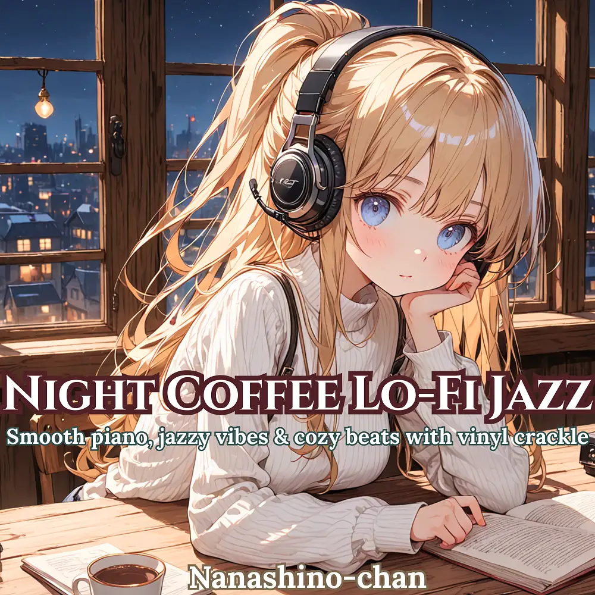

Lo-Fi · Jazz
Night Coffee Lo-Fi Jazz: Smooth piano, jazzy vibes & cozy beats with vinyl crackle
Nanashino-chan
Explore Night Coffee Lo-Fi Jazz: Smooth piano, jazzy vibes & cozy beats with vinyl crackle by Nanashino-chan: 17 instrumental tracks spanning Lo-Fi / Jazz. Start with Dawnflow / Gentle Pulse, preview the collection and find your favorites on streaming services.
2025-09-26 · Released · 17 tracks · Instrumental
Preview the album
The jacket stays here until you choose a track. Playback uses YouTube.
YOUTUBE PREVIEW
Choose a track to listen
The jacket stays here until you choose a track. Playback uses YouTube.
If playback is unavailable, open the album or track on the streaming service.
Find this album on streaming services
Links marked “search” open search results. Select the album or track on the service.
Track list 17
- 01
- 02Gentle Pulse
- 03Echoes in Dust
- 04.Slow Drifter
- 05City Afterglow
- 06Fragments of Blue
- 07Lo-Fi Garden
- 08Mellow Turns
- 09Twilight Sketches
- 10Rhythms Remembered
- 11Soft Detour
- 12Passing Moments
- 13Night Breeze
- 14Quiet Transit
- 15Hazy Reflection
- 16Crackled Canvas
- 17Faded Letters
Find a sound for your next post
Copy “Nanashino-chan + track title” and paste it into your social app’s music search. Availability depends on your region and account. Copying the name does not grant usage rights.